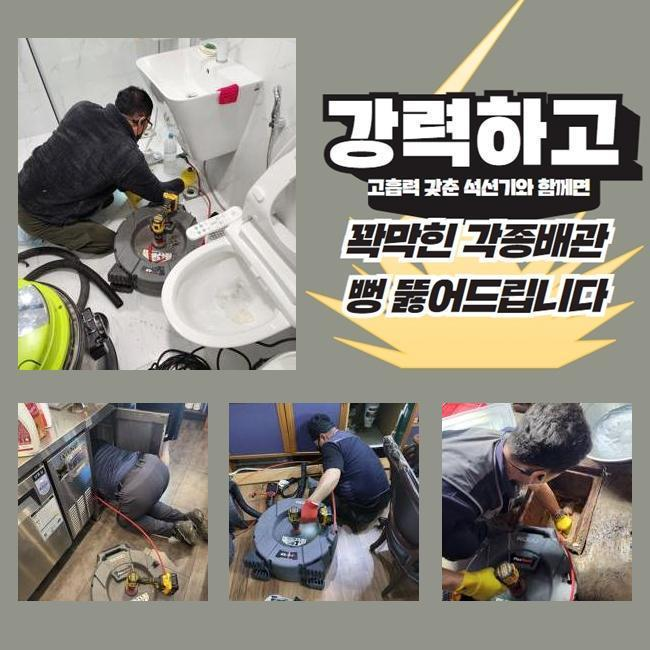
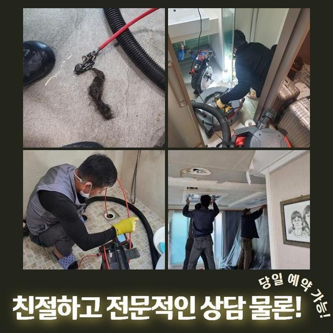
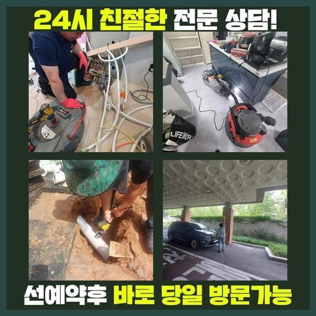
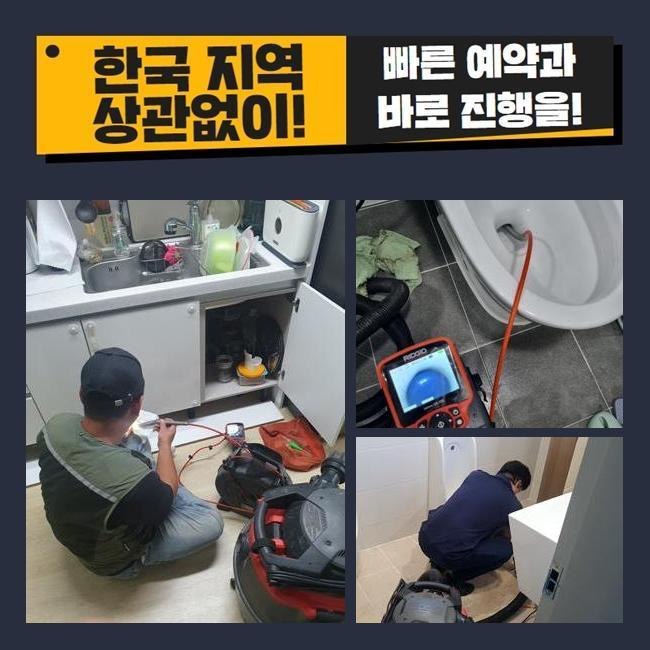
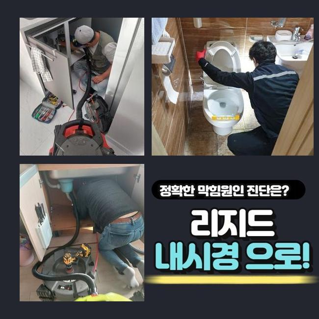
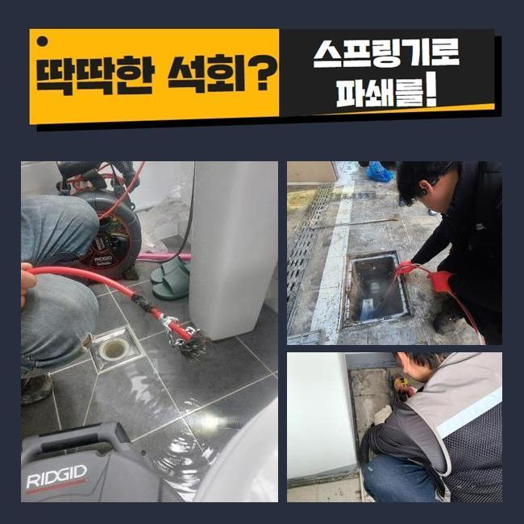

🏠 연수구 연수동변기막힘 청학동 악취차단 배관공사
용인 싱크대막힘 전문 시공 후기

📋 작업 개요
- 위치: 용인
- 서비스 유형: 싱크대막힘, 변기막힘, 하수구막힘, 배관막힘, 맨홀막힘, 역류해결, 뚫는업체, 배관청소, 고압세척, 설비공사, 배관보수, 악취차단
- 작업 일시: 2025. 3. 16. 0:25
- 업체명: 하수구수사대 (010-5615-2118)
🔍 문제 상황
연수구 연수동변기막힘 청학동 악취차단 배관공사
멀지 않은 위치의 현장에서 하수구의 불능으로 운영이 힘든 상태라고 하시며 빠른 방문이 필요하다는 의뢰 내역을 접수했어요
식당 건물이라면 하수구 설비가 고장나는 문제점으로 인해 수도시설을 운용하지 못하므로 조리나 청소를 하지 못하니 한동안 문을 닫아야 할겁니다
이 사안을 해결해야만 영업불가로 인한 피해를 감소시킬 수 있으니 가까운 시일 내에 찾아뵙고 보수해드리기로 했어요
접수를 넣어주셨던 고객분은 주방 밑의 배수구가 막힌건지 물 배출이 느릿해지고 바깥에 있는 커다란 하수시설의 잔수 역류가 일어난 것도 문제라고 봐달라고 하셨습니다
가까이서 점검할 수 있는 주방의 배수구 쪽도 체크하고 옥외 배관로까지도 손봐드릴 필요가 있었기에 간단하지만은 않은 시공에 들어가야했습니다
문제되는 장소를 마주하면 설비상의 애로사항들을 전체적으로 낱낱이 확인해보고 시공 시간에 대해서 분석한 다음 안내합니다
관로의 생김새가 독특하거나 복합적인 문제점이 꼬여있다면 결점없이 개선하고자 한다면 약간 더 걸리기도 합니다
실내에 이어 바깥 하수구를 바라봤더니 맨홀부터 산화가 진행된 상태에다 맨홀 옆의 바닥부분도 심히 젖어있다보니 깔끔치않은 모습이었습니다
설비나 부속품의 훼손이 빚어지지 않도록 집중력을 발휘하여 업무에 들어가려고 생각하고 상황 분석에 돌입했습니다

🔎 원인 분석
💡 전문가 진단: 정밀 진단 장비를 사용하여 슬러지의 고착 여부를 판명하고 타격/세척 작업을 실시했습니다.
불빛을 비춰서 내부를 보자 이물질들이 제법 많더라고요
특히 기름질이 물 위에 여기저기 접착되어 있는 것을 즉각 눈치챌 수 있는 상황이었으므로 초반부의 정리작업을 들어가서 안을 닦아내야 했습니다
실내에 있는 배수구 먼저 작업에 들어간 다음 관로를 보여주는 내시경 기기를 밀어넣어서 상황을 봅니다
실내와 실외의 배수로가 어떤 구조를 띠고 있는지 알아낸 다음에는 고압세척기의 파워로 진득하게 붙어있는 유분기 어린 슬러지를 세척하기로 순서를 매겼습니다
이 상태로는 내시경을 켜봐도 내부를 인식하기 어려울 듯 하여 잔수를 제거하는 석션 작업을 우선실시해야 했어요
이 석션기기는 마치 청소기처럼 빨아당기는 힘이 강하며 관로에 자리한 하수와 노폐물들을 효율적으로 한 곳으로 모아주는 원리로 동작됩니다
흡입력이 상당한 편이라 유동성이 있는 대상물은 가볍게 흡수가 되며 집수통 속으로 모두 모입니다
끈적이는 물질이나 벽과 한몸처럼 말라붙은 찌꺼기는 제거가 까다로워서 석션의 성능으로는 하수관을 맑게 만들 수 있는 확률이 아무래도 낮습니다
하지만 처음과 마무리에 변함없이 석션기를 쓰고 있을만큼 배관의 말끔한 세척을 해주려면 필히 써야하는 통과의례에요
석션을 돌려서 배관 통로를 세척해준 이후에 카메라를 안으로 넣어봤어요
이 내시경기기 덕분에 얽혀있는 형상으로 독특하게 배치된 배수관일지언정 구석구석 검사를 해보면서 오물과 오염물질의 밀착도나 연식에 관련한 체크해 볼 수 있게 됩니다

🔧 작업 과정
이번 현장을 들여다보니 끈적한 점성이 있는 유분과 유막이 많은 상태였습니다
결과를 내보면 이것들이 이번에 연락주신 식당의 주범일 것 같다는 예측이 되더군요
알게모르게 배수관 내측으로 조금씩 유실된 기름기가 점점 몸체를 불려나갔고 접착되어 액상인 수돗물 마저 그자리에 고여버리고 움직이지 못하자 결국 범람 사태까지 벌어진 것이었네요
내부배관을 석션기로 세척하는 동시에 하수들이 집합하는 맨홀 내부의 시설물까지 청결관리를 해드릴 필요성이 있었어요
샤프트는 스케일링 기기이며 말단에 쇠사슬이 자리하고 있습니다
석션의 흡입으로는 역부족인 단번에 제거하기 힘든 덩어리거나 장기간 변성된 채 머무르고 있는 오물을 살살 긁어서 빼거나 작은 입자로 분해할 수 있습니다
이런 샤프트기기와 잔처리를 하는 석션 배관 내 카메라까지 전부 놓치지 않고 적용해야지 청소가 만족스럽게 끝나며 꿈쩍도 하지 않는 배관의 경로를 확보할 수 있습니다
세부적인 조사에 착수해보았더니 복잡다단한 케이스여서 고압세척기를 통한 업무도 추가할 필요가 보였는데요
샤프트 석션으로 내부정화를 한 덕에 물길이 제법 트였기에 다음으로는 고압청소기를 세팅해하여 내부 정화를 이어갔습니다
강력하게 출수되는 물을 타겟팅하여 쏴주는 노즐을 조절해서 막힘 정도가 가장 심한 구역을 심층적으로 치워줬어요
꼼꼼하게 고압수를 쏘고나니 결국 배관 직경만큼 자라났던 슬러지 물질을 타개했습니다
청소기기를 돌리기 전에 내시경으로 배관 속의 현황에 대해 사전지식으로 새겨두고 집중력있는 청소 작업을 이행하여 내부에 있던 이물질을 빼내고 없애는 것에 성공할 수 있었던 것 같습니다
모든 절차들을 마무리하고 안쪽의 변화를 확인하니 전이랑은 딴판으로 지저분한 오염물질들도 너는 마법처럼 사라졌으며 벽체까지도 말끔해져서 배관이 더 깔끔해진 것을 관측할 수 있게 됐어요
배수로 안에 뿌옇게 고여서 냄새를 유발하던 오염수도 삭제됐고 장비에 묻어나왔던 내부 오염원으로부터 해방됐어요
아무래도 레스토랑이나 식당은는 식품을 다루는 양이 대폭 증가하기 때문에 그 과정 중에 배관이 막혀버릴 경우가 빈발하기는 합니다
양념 덩어리나 음식물을 비롯해 미끌미끌한 기름기가 관로로 흘러가지 않게 싱크대를 쓸 때는 조금 경각심을 가지면 좋습니다
마감 단계에 이르렀다면 통수 테스트를 해보면서 시공이 결함없이 처리되었는지 검사를 해보게 되는데요


✅ 작업 완료
집 안에서 물기를 받아서 퍼붓듯 부어주고 마찬가지로 청소한 옥외시설까지 막히는 기색 없이 물이 잘 방출되는지 체크해주는 작업입니다
시원한 소리를 내면서 하수가 옥외 관로로 속속들이 모여드는 게 보이니 비로소 마감해도 될 듯 했어요
하수구 기능을 되돌려드리고 곳곳의 검사를 마쳤다면 자리를 뜨게 됐습니다
하수의 처리가 적절하지 못할 때는 돈이 아깝다는 생각에 셀프 뚫음을 시도하시다가 관내 상태가 더 나빠질 수 있습니다
하수구 하자가 생겼음을 알려주시면 내방드리고 물막힘이 빚어진 사유부터 추적해서 없애드리니 전문적 조치를 받아보시기 바랍니다!



⚠️ 주방 싱크대 배관 막힘 예방 수칙
- ✅ 기름기가 묻은 식기나 프라이팬은 설거지 전 키친타올로 반드시 기름때를 닦아내세요.
- ✅ 주기적으로 싱크대 개수대에 뜨거운 물을 가득 받아 한 번에 내려 배관 내부 기름을 씻어내세요.
- ✅ 배수구 거름망을 미세한 필터로 사용하시고 음식물 찌꺼기가 틈으로 새어 들지 않게 관리하세요.
- ✅ 베이킹소다와 식초를 뜨거운 물과 함께 일주일에 한 번씩 부어주면 배관 살균과 막힘 예방에 좋습니다.
💡 핵심 정리
- 확실한 장비 작업(내시경 점검 및 샤프트 스케일링)으로 원인을 뿌리 뽑습니다.
- 작업 후 1년 이내에 동일한 부위 재발 시 100% 무상 A/S 서비스를 보장합니다.
- 서울 · 경기 · 인천 전 지역에 24시간 언제든 긴급 출동할 수 있도록 항시 대기 중입니다.
❓ 자주 묻는 질문 (FAQ)
🚨 용인 싱크대막힘 문제로 고민이신가요?
정확한 원인 진단과 확실한 시공으로 재발 없는 해결을 약속드립니다.
24시간 긴급 출동 | 서울 · 경기 · 인천 전지역 | 1년 내 재발 시 무상 A/S